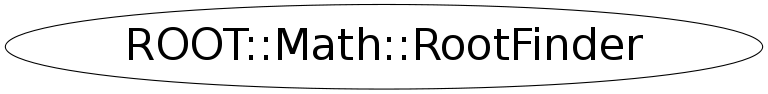

class ROOT::Math::RootFinder
User Class to find the Root of one dimensional functions.
The GSL Methods are implemented in MathMore and they are loaded automatically
via the plug-in manager
The possible types of Root-finding algorithms are:
<ul>
<li>Root Bracketing Algorithms which do not require function derivatives
<ol>
<li>RootFinder::kBRENT (default method implemented in MathCore)
<li>RootFinder::kGSL_BISECTION
<li>RootFinder::kGSL_FALSE_POS
<li>RootFinder::kGSL_BRENT
</ol>
<li>Root Finding Algorithms using Derivatives
<ol>
<li>RootFinder::kGSL_NEWTON
<li>RootFinder::kGSL_SECANT
<li>RootFinder::kGSL_STEFFENSON
</ol>
</ul>
This class does not cupport copying
@ingroup RootFinders
Function Members (Methods)
public:
| virtual | ~RootFinder() |
| int | Iterate() |
| int | Iterations() const |
| const char* | Name() const |
| double | Root() const |
| ROOT::Math::RootFinder | RootFinder(ROOT::Math::RootFinder::EType type = RootFinder::kBRENT) |
| bool | SetFunction(const ROOT::Math::IGradFunction& f, double xstart) |
| bool | SetFunction(const ROOT::Math::IGenFunction& f, double xlow, double xup) |
| bool | SetMethod(ROOT::Math::RootFinder::EType type = RootFinder::kBRENT) |
| bool | Solve(int maxIter = 100, double absTol = 1E-8, double relTol = 1E-10) |
| int | Status() const |
private:
| ROOT::Math::RootFinder& | operator=(const ROOT::Math::RootFinder& rhs) |
| ROOT::Math::RootFinder | RootFinder(const ROOT::Math::RootFinder&) |
Data Members
public:
| enum EType { | kBRENT | |
| kGSL_BISECTION | ||
| kGSL_FALSE_POS | ||
| kGSL_BRENT | ||
| kGSL_NEWTON | ||
| kGSL_SECANT | ||
| kGSL_STEFFENSON | ||
| }; |
private:
| ROOT::Math::IRootFinderMethod* | fSolver | type of algorithm to be used |
Class Charts
{kind=link}
{kind=link}
{kind=link}
{kind=link}

Function documentation
bool Solve(Function &f, Derivative &d, double start, int maxIter, double absTol, double relTol)
virtual ~RootFinder()
bool SetMethod(ROOT::Math::RootFinder::EType type = RootFinder::kBRENT)
bool SetFunction(const ROOT::Math::IGenFunction& f, double xlow, double xup)
Provide to the solver the function and the initial search interval [xlow, xup]
for algorithms not using derivatives (bracketing algorithms)
The templated function f must be of a type implementing the \a operator() method,
<em> double operator() ( double x ) </em>
Returns non zero if interval is not valid (i.e. does not contains a root)
return fSolver-> SetFunction(const ROOT::Math::IGenFunction& f, double xlow, double xup)
const char * Name() const
Return the current and latest estimate of the lower value of the Root-finding interval (for bracketing algorithms)
double XLower() const {
return fSolver->XLower();
}
Return the current and latest estimate of the upper value of the Root-finding interval (for bracketing algorithms)
double XUpper() const {
return fSolver->XUpper();
}
Get Name of the Root-finding solver algorithm